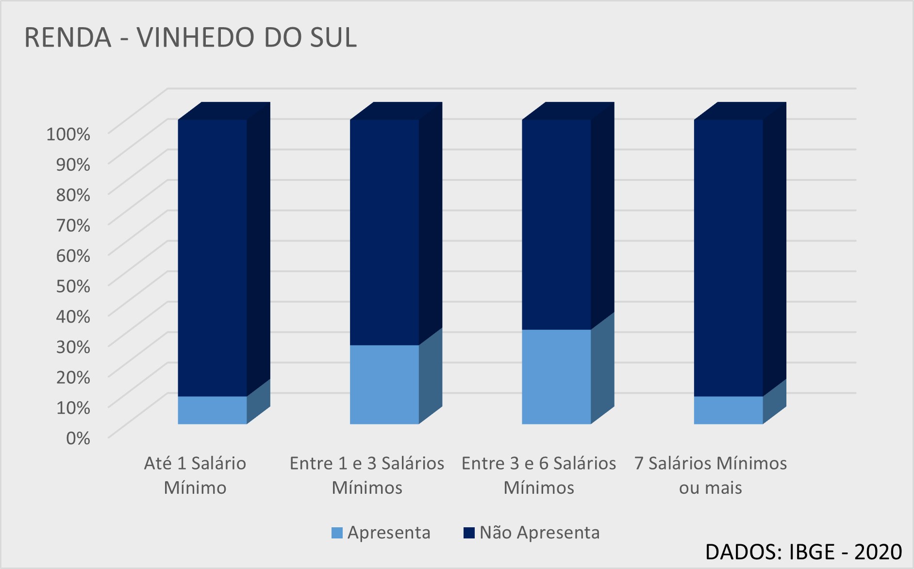

Dados Populacionais
Conheça algumas informações sobre a população da nossa cidade.
De acordo com o censo do IBGE em 2020, nossa população conta com 8600 habitantes, sendo esses 55% homens e 45% mulheres. A população da cidade teve um grande crescimento quando as indústrias que fazem as máquinas usadas na produção e no envasamento de vinhos chegaram na região, além do aumento de mão de obra no começo do século XXI, nossa população mais que dobrou em 20 anos, de 4000 pessoas em 1990 para 8600 em 2020.
A maior parte da população se concentra entre os 41 e 50 anos, sendo 1291 homens e 1054 mulheres nessa faixa etária, construindo assim a maior parte da população economicamente ativa. Quanto às crianças, temos 767 crianças (de 0 a 10 anos), sendo 437 meninos e 330 meninas, elas fazem parte da próxima geração da cidade.
Em 2020 por conta da pandemia, vários idosos da nossa cidade vieram a falecer, por isso há pouquíssimas pessoas acima dos 80 anos em nossa cidade, segundo a pirâmide etária divulgada pelo IBGE.
A maior parte da população se concentra entre os 41 e 50 anos, sendo 1291 homens e 1054 mulheres nessa faixa etária, construindo assim a maior parte da população economicamente ativa. Quanto às crianças, temos 767 crianças (de 0 a 10 anos), sendo 437 meninos e 330 meninas, elas fazem parte da próxima geração da cidade.
Em 2020 por conta da pandemia, vários idosos da nossa cidade vieram a falecer, por isso há pouquíssimas pessoas acima dos 80 anos em nossa cidade, segundo a pirâmide etária divulgada pelo IBGE.
A população de Vinhedo do Sul é diversificada na questão étnico-racial, é formada por 48% de pessoas brancas, sendo, a maioria descendentes dos imigrantes europeus que chegaram aqui por volta de 1900, 39,5% de negros, 8% de pardos, 2,5% de amarelos, ou asiáticos e 2% de indígenas.
Na questão de renda, nossa população vive bem, 45% da população Vinhedense, vive com uma renda entre 3 e 5 salários mínimos, apenas 10% vive com renda inferior abaixo de um salário mínimo e cerca de 10% vivem com renda acima de 6 salários mínimos.
A frequência escolar das pessoas da cidade no ensino médio é maior entre as mulheres, que têm cerca de 86% de frequência escolar no ensino médio, enquanto os homens têm 78%. No ensino superior isso muda um pouco, os homens que completam o ensino médio tem frequência nas faculdades de 65% quando brancos e 40% quando negros ou pardos, já as mulheres 40% quando são brancas e 30,5% quando são negras ou pardas.
A Cidade de Vinhedo do Sul tem como principal setor econômico o setor primário, que é o de matérias-primas, no nosso caso, principalmente no cultivo de uvas. 52% dos empregos da cidade são gerados pelo setor primário, é uma cidade que depende muito da agricultura para a economia rodar. Outros 38% são gerados pelo setor secundário que tem como principal atividade em Vinhedo do Sul, a montagem de máquinas, a fabricação de garrafas, barris, dentre outros materiais usados na produção de vinho. Além disso, 10% dos empregos são do setor terciário, ou seja, setor de serviços, sendo algumas lojas de vinhos que tem como objetivo vender para turistas que vêm conhecer nossa cidade que tem arquitetura baseada na arquitetura italiana principalmente e algumas outras lojas são de serviços básicos como, lojas de roupa, supermercados, lanchonetes, dentre outros.
A Crise que enfrentamos nos últimos anos fez o desemprego explodir no Brasil e em nossa cidade não foi diferente, cerca de 12% da população era desempregada em 2015, em 2019 conseguimos estabilizar isso chegando a 4%, porém veio a pandemia e em 2020 fechamos o ano com desemprego de 5%. A tendência é que o desemprego venha a baixar com o fim da pandemia e a vacinação em massa da população
Isso tudo, em conjunto com as nossas questões de desenvolvimento social como estudo no ensino médio e ensino superior, faz nossa cidade ter um IDH de 0,710, considerado médio-alto.